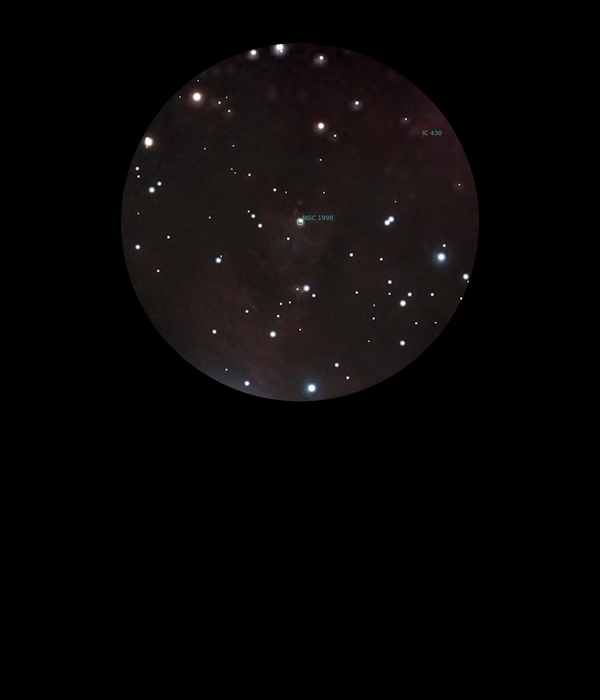

NGC 1999
Reflection
Nebula in Orion
NGC 1999
Mag 9.5
The Cosmic Keyhole
21/01/17
A very tiny but surprisingly easy to locate
Reflection Nebula , in a locally rather sparse
star-field which is just as well since it is very
faint
Easily located, or was I just lucky with the
finder scope
A small haze, maybe slightly fan shaped, is there
a central star? However, just pan the 24mm FOV
down and see how the star-field changes!
A neat little object, pleased to have located it